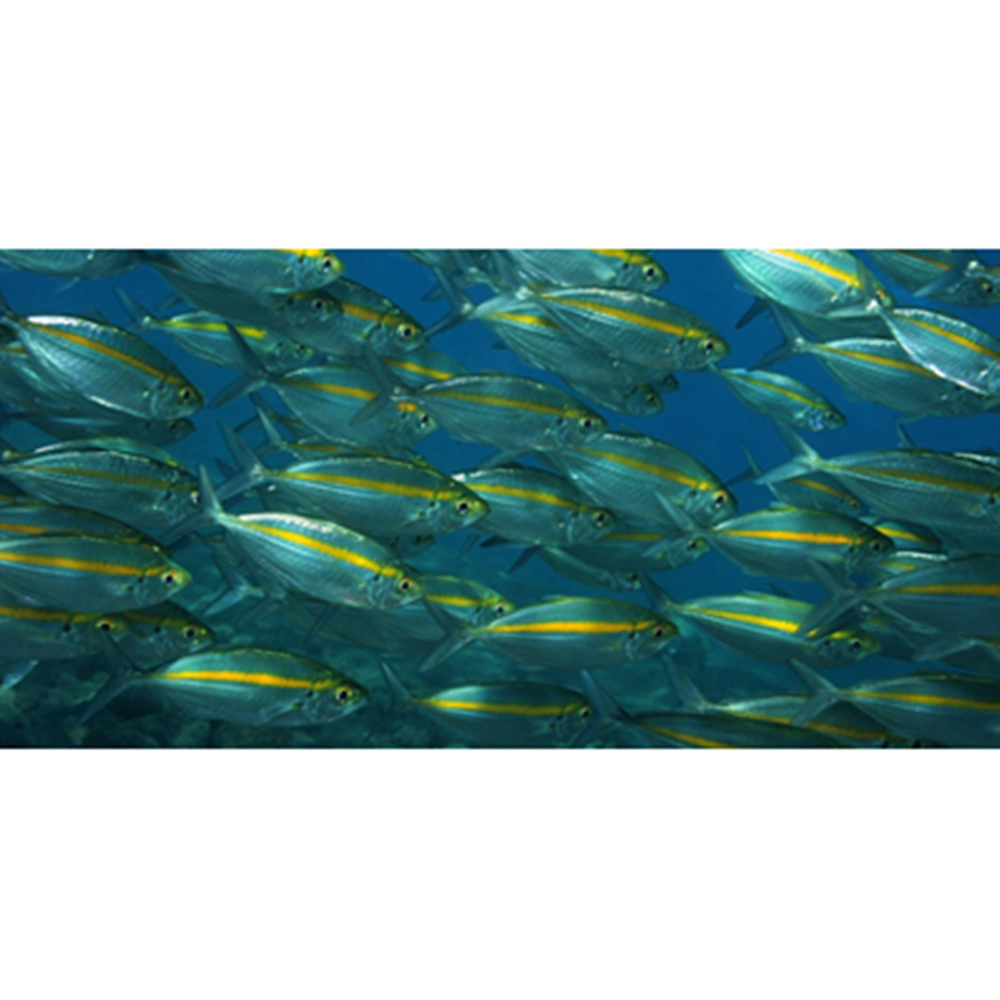

Ikan Selar
Ikan selar kuning adalah jenis ikan air laut yang berasal dari suku Carangidae, ikan ini menyebar luar di pesisir dan laut-laut dangkal pada kawasan perairan Indo-Pasifik Barat. Di indonesia sendiri ikan ini menjadi komoditas yang cukup penting karena memiliki nilai ekonomi yang tinggi.
Salah satu daerah di Indonesia yang merupakan daerah tangkapan tersbesar ikan selar kuning adalah kepulauan riau, disana ikan selar kuning merupakan salah satu jenis ikan konsumsi yang memiliki nilai ekonomis tinggi. Sedangkan daerah lainnya ialah di bintan, tepatnya di perairan pantai Timus Pulau Bintan, disana penangkapan dilakukan menggunakan alat tangkap tradisional seperti : jaring arad, jaring insang, bagan, sero, dan alat tangkap lainnya. Khusus untuk statistik produksi perikanan, jenis selar kuning ini tidak terdaftar sabagai nama tersendiri, tapi mungkin masuk dalam kelompok ikan selar. Ikan selar umumnya ditemukan tidak jauh dari pantai, berenang dalam gerombolan besar diatas dasar laut yang berlumpur dengan kedalaman kurang dari 52 m.
Kandungan Ikan Selar (dalam 100 gram)
| Protein (g) | Kalori (Kal) | Lemak (g) | Besi (mg) | Kalsium (mg) | Fosfor (mg) | Vit A (SI) | Vit B1 (mg) | Kolesterol (mg) | BDD (%) |
|---|---|---|---|---|---|---|---|---|---|
| 18,8 | 100 | 2,2 | 1 | 40 | 179 | 150 | 0,37 | 32 | 48 |
Manfaat Ikan Selar
- Memperbaiki Sel Tubuh
- Mengatasi Edema
- Menambah Massa Otot
- Menunjang Fungsi Otak
- Mencegah Batu Ginjal
Kandungan fosfor pada daging ikan selar bermanfaat untuk memperbaiki sel-sel tubuh yang sempat rusak. Selain itu ikan selar juga bermanfaat untuk memaksimalkan sel tubuh.
Edema merupakan penyakit pembengkakan pada kulit, disebabkan karena timbunan cairan. Edema biasanya disebabkan karena infeksi bakteri dan jamur. Namun juga bisa karena kulit kekurangan vitamin B maupun D. Faktor stress juga memperparah Edema. Ikan Selar dipercaya akan menyembuhkan Edema, secara perlahan-lahan tapi pasti.
Otot Manusia dipercaya bisa bertambah ukurannya jika dilatih dan diberi nutrisi yang tepat, terutama berasal dari sumber protein hewani dan nabati. Olahraga angkat beban sangat ampuh memperbesar otot. Apalagi jika ditunjang dengan konsumsi ikan Selar yang selama ini terkenal amat kaya protein.
Meski tidak semaksimal ikan bandeng, namun ikan ini juga sangat bermafaat untuk menunjang fungsi otak. Hubungan sel motorik dan sel otak akan didukung oleh sel-sel pembangun yang sehat. Kandungan ikan selar dapat membuat otak terus berkembang lalu membentuk lapisan sel yang sehat dan mempengaruhi kecerdasan otak.
Kandungan kalsium yang terdapat dalam daging ikan selar dipercaya akan mencegah penyakit batu ginjal.